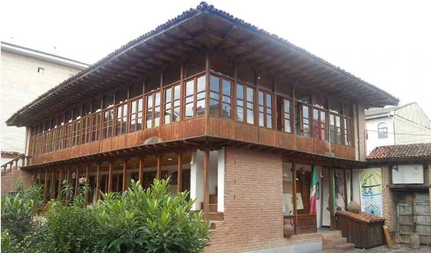
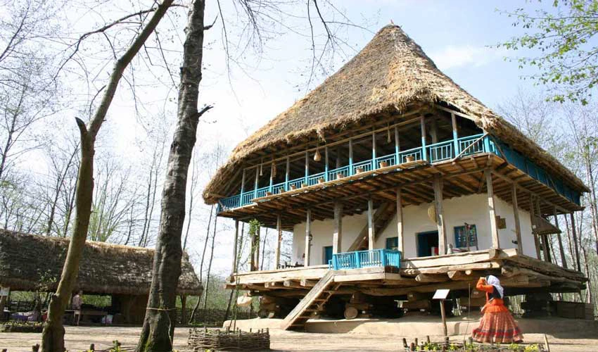
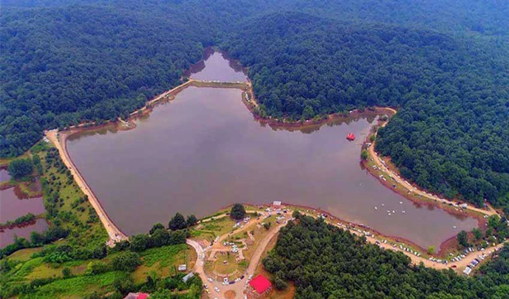

نام شهر : رشت
اگر این سؤال برایتان ایجاد شده که رشت در کدام استان است باید در پاسخ بگوییم که رشت، مرکز استان گیلان در شمال ایران است و در ناحیه غربی دریای خزر با فاصله 327 کیلومتری از تهران قرار دارد. این شهر بهعنوان بزرگترین و پرجمعیتترین شهر شمال کشور، با مناطق سرسبز و آبوهوای معتدل شناخته میشود. رشت، یکی از مهمترین مراکز تجاری و فرهنگی شمال ایران است و بهدلیل موقعیت جغرافیایی مناسب، در مسیر راههای ارتباطی بین شهرهای قزوین، انزلی، لاهیجان و فومن است.
جمعیت : 679,000
کشور : ایران
سال تاسیس : پیش از اسلام
بهترین زمان سفر : بهار و اوایل پاییز

خانه میرزا کوچک خان
داستان زندگی میرزا کوچک خان جنگلی با مهمترین وقایع تاریخی اواخر دوران قاجاریه پیوند خورده است. به همین دلیل آشنایی با این بزرگمرد تاریخ و آشنایی با آن باعث میشود با بخش مهمی از تاریخ ایران آشنا شوید. میرزا در اتفاقات انقلاب مشروطه، تصرف تهران، جنگ با روسها و انگلیسیها و مبارزات داخلی نقش پررنگی داشته است.
اطلاعات بیشتر
موزه میزاث روستایی گیلان
با شنیدن نام «موزه» فضای بسته و پر از اشیا تاریخی به ذهن انسان میرسد در حالی که همه موزهها اینطور نیستند. موزههای فضای باز از انواع جذاب موزه در دنیا هستند که خوشبختانه در گیلان یکی از آنها را داریم. موزه میراث روستایی گیلان، موزهای مختص خانههای روستایی گیلان است.
اطلاعات بیشتر
دریاچه سقالکسار
سقالکسار بیشتر به عنوان دریاچه شناخته میشود اما در اصل دریاچه نیست، یک سد خاکی برای ذخیره آب است. نام سقالکسار از روستای نزدیک آن گرفته شده و از جاهای دیدنی رشت است. برای نام سقالکسار چند معنی گفته میشود؛ مردم محلی میگویند سقال به معنای محل آب خوری و لک و سار نام دو پرنده زیبا است و برخی هم میگویند معنی آن «محل آبخوری بالای تپه» است.
اطلاعات بیشترغذاهای معروف
- میرزا قاسمی: ترکیبی از بادمجان کبابی، سیر، گوجهفرنگی و تخممرغ که معمولاً با برنج یا نان سرو میشود.
- باقلا قاتق (باقالی قاتق): خورشتی از باقالی محلی، شوید، سیر و تخممرغ که با برنج کته گیلانی خورده میشود.
- فسنجان گیلانی: خورشتی از گردو و رب انار با مرغ یا اردک که طعمی ترش و کمی شیرین دارد.
- اناربیج: شبیه فسنجان است اما با سبزیهای معطر محلی و کوفتههای کوچک گوشت تهیه میشود.
| مکان | نوع مکان | ساعت بازدید | قیمت بلیط |
|---|---|---|---|
| میدان شهرداری رشت | پارک جنگلی سراوان | بازار بزرگ رشت | ارامگاه میرزا کوچک خان |
| میدان تاریخی و گردشگری | پارک و طبیعت گردی | بازار سنتی | مکان تاریخی |
| شبانه روزی | 18:00 الی 8:00 | حدود 21:00 الی 8:00 | 18:00 الی 8:00 |
| رایگان | حدود 10 الی 20 هزار تومان | رایگان | رایگان |